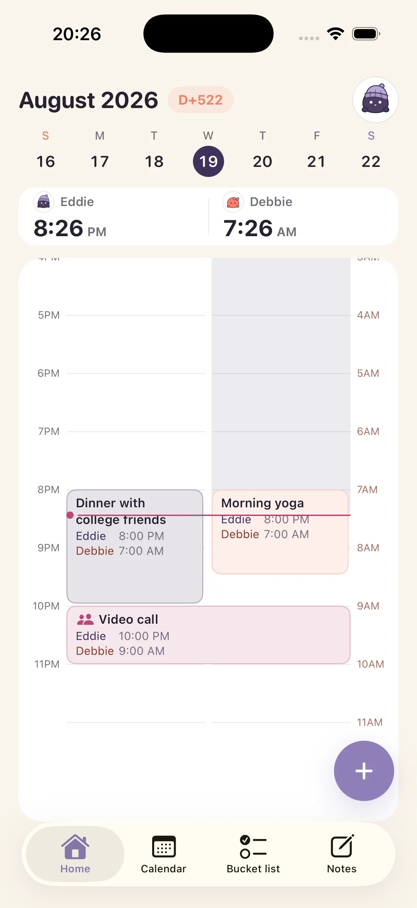
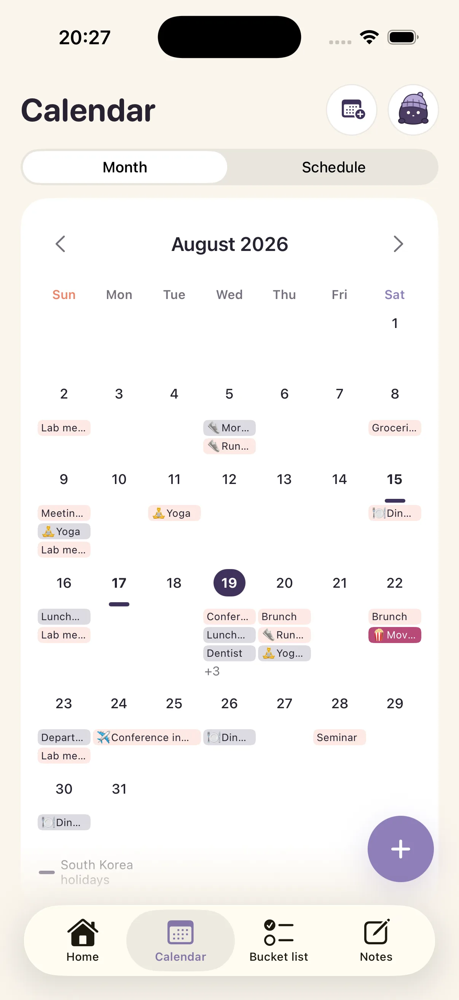
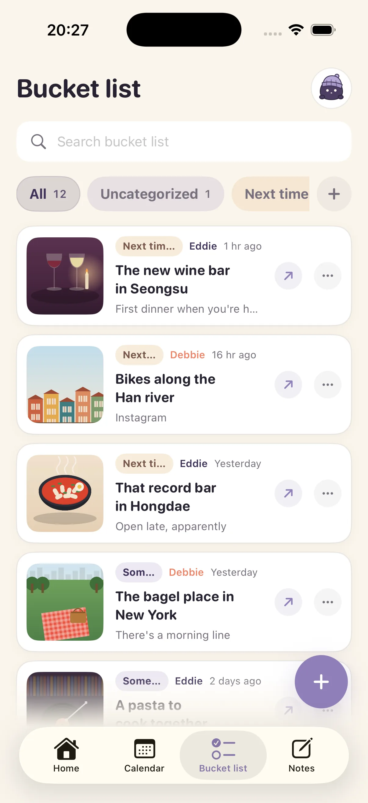
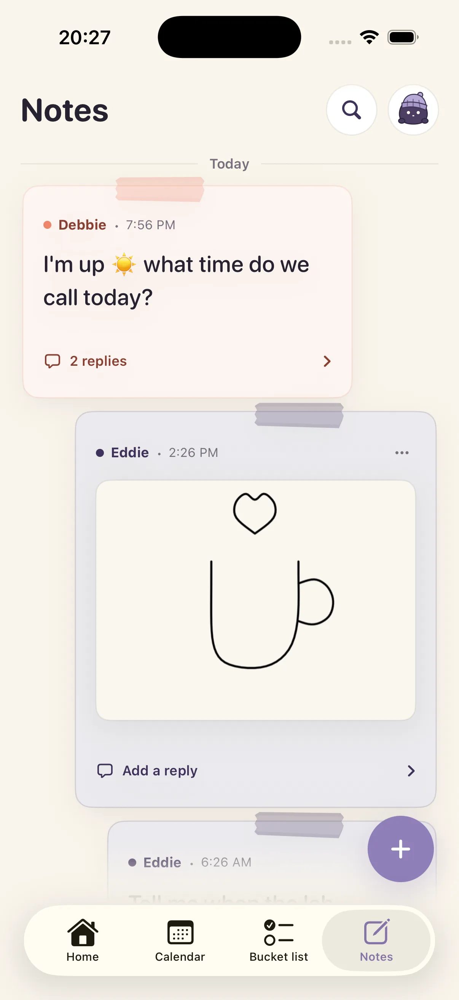

Time and weather
Both of your right-nows, side by side.
Naru
Naru finds when you're both available.
Even far apart. Even out of sync.

ONE MOMENT, TWO DAYS
Your events and theirs, each in its own local time — and when you're both available, on one screen.
WHY WE MADE NARU
We tried a few couple apps.
Each one just added another chore.
One person's evening became the other's morning. Instead of working out “can I call now?” and “what time works this weekend?” every single time, we wanted to see each other's day through the calendars we already used. So we built Naru.
It helps most when you're far apart, and it keeps working on the days you're together.
01
THE PRESENT
Asleep, busy, or both available. From times and calendars alone — no location tracking.
Both of your right-nows, side by side.
Every event lands in the right local time.
Naru finds the windows when neither of you is busy.
03
THE THINGS YOU SHARE
Connect the calendars you already use, and collect your next date and short notes together.
CALENDAR · 01
Naru reads the iPhone Calendar and Google Calendar events you select, read-only, and shows them in Naru and its widgets. It never creates, edits, or deletes Google Calendar events, and across time zones it always shows each event in the right local time.

BUCKET · 02
Share from YouTube, Instagram, or Photos and the link, text, and image land in one list. Search by tag or by when you saved it, then tap to see the image and the original in full. Up to 100 things between you — just the ones you really want.

NOTES · 03
Leave a note that doesn't demand a reply — “ten minutes after my meeting?”, “tell me when you're home”.

NARU MEMBERSHIP
The moment you first pair, every feature opens for 7 days. No card up front, and nothing charged when the trial ends — you decide after actually using it together.
Still free after 7 days
Free for the first 7 days · Naru Membership
A membership bought by one person applies to both paired people. Monthly and annual plans renew until you cancel, and you can cancel any time in iOS Settings. Lifetime is a single payment with no renewal. Full conditions are in the Terms of Service. When the trial ends, your past events and everything you built together stay.
MADE FOR TWO
We never receive live location.
What you save is never used for advertising.
Sharing stops the moment you disconnect.

TESTFLIGHT
While we get ready for the App Store, you can use Naru on TestFlight. Open the link on your iPhone and it installs right away. Everything unlocks for 7 days when you first connect, and nothing is charged when the trial ends.
Get Naru on TestFlightYou'll need the TestFlight app on an iPhone running iOS 17 or later. Send the same link to the person you'll use it with.